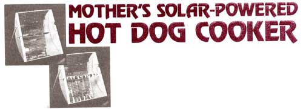
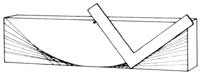
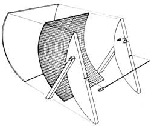
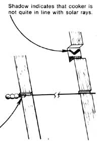

MATERIALS
2 each 2" X 8" X 28" to 30"
1 each 1/8" X 26" X 32"
2 each 3/4" X 1 " X 20"
1 each 1/8" or 3/16" diameter
4 each three large, one small
I each 1/4" X 2"
2 each 1/4" X 3" carriage bolts
1 each glue and paint
2 each 18" X 24"
lumber
paneling
pine
stainless steel welding rod
wooden beads to fit rod
wooden dowel
with nuts and flat washers
as needed
Flex-Sheet-Mirror*
Here's just the thing to add a little extra fun and excitement to all those outdoor excursions, picnics, and cookouts that your family will be enjoying during the coming months. It's a solar cooker built of wood, a few pieces of hardware, and either reflective mylar or something called Flex-Sheet-Mirror. The whole shebang can be put together for less than $30 ... much less if you're good at scrounging.
MOTHER's Travis Brock whipped up the broiler you see here as a Christmas gift for a friend. "The principle of the cooker's operation is very simple," says Travis. "When aimed at the sun, the unit catches all the solar radiation which strikes its curved face ... and focuses it Into a concentrated line of heat that falls on the broiler's skewer."
Travis further points out that the only real trick to making the hot dog or shish kebab cooker work properly lies in designing the collector's curved back so that it, in fact, does focus the sun's rays into one narrow and intense band of heat. "But that's not as difficult as you may think," Brock explains. "You can either calculate the curve mathematically with the formula given in George Donald Graham's article in MOTHER NO. 47, or-and this is even easier yet-you can lay the parabolic out in a jiffy with a nail and a framing square as shown in the accompanying sketch."
Use a band saw, saber saw, or coping saw, and either a rasp or sandpaper to cut your curve out and smooth it down once you have it drawn. Then use what's left of the first 2 X 8 as a pattern to mark and cut a second. These two curved pieces of wood will be your cooker's sides.
Cut a 1/4"-square notch (centered right on your parabolic curve's pivot point) out of each of the sides. Your broiler's skewer will fit into these notches when the cooker is finished.
Then cut a bigger notch (1-1/4" deep and 1-1/2" long) into one of the sides as shown. Drill a 1/4" hole one inch deep into the floor of this indentation ... taking care to make the hole as perfectly perpendicular to the face of the piece of wood as possible. Finally, put a little glue on one end of a 1/4" X 2" wooden dowel and push or tap this "aiming" peg as far into the hole as It will go.
You're now ready to glue and nail the 1/8" X 26" X 32" piece of paneling to the curved faces of the two wooden sides. Trim the paneling as necessary to make everything fit together the way it should.
When the back is in place, glue the Flex-Sheet-Mirror (or reflective mylar) to the inside of the paneling. If you use the flex mirrors, you'll have to cut a strip of one edge of the sheeting and refit it as necessary to fill the entire trough with the reflective facing.
Make legs for your little sun scoop by drilling the necessary holes and bolting the two 3/4" X 1" X 20" pieces of pine to the cooker's sides as illustrated. The skewer is finished off by gluing one small and three larger wooden beads onto a length of 1/8" stainless steel welding rod (or use a heavier rod if you prefer). File four flat spots on the small bead once the glue is dry. Then, when the squared bead is placed in the skewerholding notch, you'll be able to turn your broiling goodies a quarter-turn at a time as they cook.
Add a coat of non-toxic paint to all the sun scoop's wooden parts and you're ready to "start cookin' ". Spear three or four wieners or a string of shish kebab fixin's on the stainless steel rod, set the skewer into its notches, and point your broiler at the sun. It'll be aimed precisely at Ole Sol when the little round peg in the big square notch casts no shadow at all. Reaim the cooker as necessary as time goes on and the sun moves across the sky.
On a good day, hot dogs will be steaming tender and juicy all the way through in only four to five minutes ... a shish kebab will take a little longer. And don't worry about the juice that drips onto the mirrors ... it'll wipe off when you're finished. Or you can save all those delicious drippings (and make your broiler cook better on marginal days to boot) by painting some aluminum foil flat black on one side and wrapping it-juice-tight-around the franks or shish kebab (painted side out, of course).
|
 Procedure: Drive nail into middle Of 28"". to 30""-long 2 X 8, 1/4"" in from one edge. Then-using the nail as a pivot-swing and slide a framing square so that its corner moves precisely along the 2 X 8's opposite edge. Stop the square frequently as you move it along and, with a pencil, draw a series of overlapping lines along the square's other leg as shown. These overlapping lines will describe a perfect (for this project) parabolic curve |
 Flex-Sheet-Mirror costs about $3.50 a square toot, and it your local glass dealer doesn't have it in stock, he can order it for you from National Products Co., 900 Baxter Ave., Louisville, Ky. 40204. You'll need six square feet, or $21 worth. Or you can do the same job for less money by substituting two sheets of 12"" X 36"" 2-mil reflective mylar avail able from S.U.N., Box 306, Bascom, Ohio 44809. The mylar is priced at $3.75 a sheet plus shipping costs ($1.75 within 600 miles of Bascom ... $2.75 for greater distances). The mylar will do the job . . it just won't last as long as the mirrors |
 |
|
 |
|
|